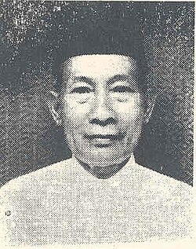

| Topik | Keterangan |
|---|---|
| Nama Lengkap | Soegondo Djojopoespito |
| Tempat, tanggal lahir | Tuban, Jawa Timur, 22 Februari 1905 |
| Peran | Ketua Kongres Pemuda II |
Soegondo Djojopoespito adalah tokoh muda dari organisasi Perhimpunan Pelajar-Pelajar Indonesia (PPPI). Ia menjadi ketua pelaksana Kongres Pemuda II, yang menghasilkan lahirnya Sumpah Pemuda. Dalam kongres itu, ia memimpin jalannya sidang dan mendorong semangat persatuan antar organisasi pemuda dari berbagai daerah di Indonesia. Setelah kemerdekaan, Soegondo aktif sebagai pegawai negeri dan ikut membangun pendidikan nasional.